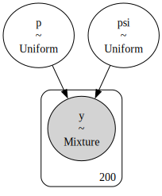
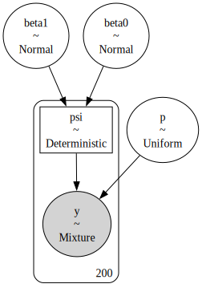
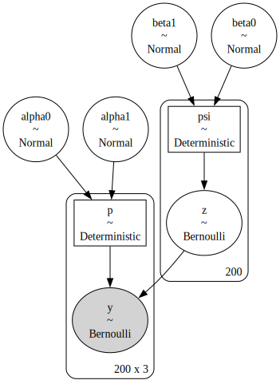
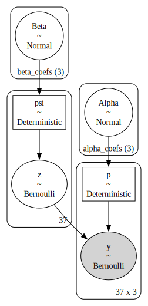

Estimating occurrence with site-occupancy models in PyMC
Author
Affiliations
Philip T. Patton
Marine Mammal Research Program
Hawaiʻi Institute of Marine Biology
Published
November 9, 2025
In this notebook, I demonstrate how to fit static site-occupancy models in PyMC (Royle and Dorazio 2008, chap. 3). The standard site-occupancy model models binary detection/non-detection data \(y_{j,k}\) for repeated surveys \(k=1,2,\dots,K\) at sites \(j=1,2,\dots,J.\) The species is present at the sites when \(z_j=1,\) and absent otherwise. We assume that our probability of detecting the species given that the site is occupied is \(P(y_{j,k}|z_j=1)=p,\) and zero when the site is unoccupied. The probability of occurrence, which is typically the parameter of interest, is \(P(z_{j}=1)=\psi.\) As such, we can think of this as a zero-inflated binomial model, where \[
\begin{align}
&y_j \sim
\begin{cases}
0, & \text{if } z_j = 0 \\
\text{Binomial}(K, p), & \text{if } z_j = 1
\end{cases} \\
&z_j \sim \text{Bernoulli}(\psi)
\end{align},
\] which assumes a constant occurrence probability across sites and a constant detection probability. I start with this simple model, then add site- and visit-level covariates later.
Simulated examples
To start, I demonstrate how to simulate this zero-inflated model using NumPy. Throughout this section, I use hyperparameter values similar to those of Kéry and Schaub (2011).
%config InlineBackend.figure_format ='retina'# relevant librariesimport numpy as npimport pymc as pmimport arviz as azimport pandas as pdimport matplotlib.pyplot as plt# only necessary on MacOS Sequoia# https://discourse.pymc.io/t/pytensor-fails-to-compile-model-after-upgrading-to-mac-os-15-4/16796/5import pytensorpytensor.config.cxx ='/usr/bin/clang++'# plotting stylesplt.style.use('fivethirtyeight')plt.rcParams['axes.facecolor'] ='white'plt.rcParams['figure.facecolor'] ='white'def scale(x):'''Scale x: 0 is the mean and 1 is one standard deviation from the mean.'''return (x - np.nanmean(x)) / np.nanstd(x)def invlogit(x):'''Compute inverse logit of x.'''return1/ (1+ np.exp(-x))def sim_y(p, z, site_count, visit_count):'''Simulate detections given detection probability p and occurrence state z.''' ones = np.ones((site_count, visit_count)) p_array = p * ones flips = rng.binomial(1, p_array) y = (flips.T * z_true).Treturn y## simulationSEED =808rng = np.random.default_rng(seed=SEED)# sampling characteristicssite_count =200visit_count =3## ecological model# true parameter valuespsi_true =0.8# simulate occurrence statez_true = rng.binomial(1, psi_true, size=site_count)## detection model# true parameter valuesp_true =0.5# simulate detectiony = sim_y(p_true, z_true, site_count, visit_count)# number of detections at each sitey_summarized = y.sum(axis=1)# detection data at the first five sitesy[:5]
Next, I use PyMC to train the occupancy model with the simulated data. First, similar to JAGS and Stan, the model must be specified using the PyMC syntax. This is done using a context manager in Python, essentially, a with statement. This creates a Model object.
with pm.Model() as constant:# priors for the detetion and occurrence probabilities\ psi = pm.Uniform('psi', 0, 1) p = pm.Uniform('p', 0, 1)# likelihood for the summarized data pm.ZeroInflatedBinomial('y', p=p, psi=psi, n=visit_count, observed=y_summarized)
In JAGS, the prior for \(p\) would be specified as p ~ dunif(0, 1). The PyMC equivalent is p = pm.Uniform('p', 0, 1). This could, alternatively, be specified as p = pm.Uniform('detection probability', 0, 1). For the likelihood, I use PyMC’s built-in ZeroInflatedBinomial distribution. We tell PyMC that this is an observed random variable by supplying data to the observed argument. PyMC also has handy tools for visualizing the model.
pm.model_to_graphviz(constant)

Figure 1: Visual representation of model \(p(\cdot)\psi(\cdot).\)MarginalMixture refers to the zero-inflated binomial distribution.
Now I can sample from the posterior. Again, I use the context manager, this time referring to the model by name. It’s typical to name the output with idata because, by default, PyMC returns an object of class InferenceData from the Arviz package. Arviz is similar to the coda package for R.
with constant: constant_idata = pm.sample()
Initializing NUTS using jitter+adapt_diag...
Multiprocess sampling (4 chains in 4 jobs)
NUTS: [psi, p]
Sampling 4 chains for 1_000 tune and 1_000 draw iterations (4_000 + 4_000 draws total) took 1 seconds.
PyMC will try to use the No-U-Turn Sampler (NUTS) whenever possible. As you can see, it samples the posterior quickly. I can plot the output using the az.plot_trace(), supplying the true values for \(p\) and \(\psi\) for comparison. I can also look at a tabular summary using az.summary().
Figure 2: Traceplots for the \(p(\cdot)\psi(\cdot)\) model. The true parameter values are shown by vertical and horizontal lines.
az.summary(constant_idata)
mean
sd
hdi_3%
hdi_97%
mcse_mean
mcse_sd
ess_bulk
ess_tail
r_hat
psi
0.801
0.043
0.719
0.881
0.001
0.001
2215.0
1870.0
1.0
p
0.498
0.030
0.442
0.556
0.001
0.000
2469.0
2295.0
1.0
Adding site covariates
Next, I add in some realism by simulating a site-level covariate \(x\) that affects the occurrence probability. I model this effect with a logit-linear model, i.e., \(\psi_j=\text{logit}^{-1}(\beta_0 + \beta_1 x_j).\)
## ecological model# true parameter valuesbeta0_true =-1beta1_true =3# covariatesx = scale(rng.uniform(size=site_count))# linear modelmu_true = beta0_true + beta1_true * xpsi_true = invlogit(mu_true)# simulate occurrence statez_true = rng.binomial(1, psi_true)## detection model# true parameter valuesp_true =0.75# simulate detectiony = sim_y(p_true, z_true, site_count, visit_count)# vector with the number of detections at each sitey_summarized = y.sum(axis=1)# detection data at the first five sitesy[:5]
Again, I specify the model with PyMC. Like JAGS, the random variables can be manipulated, as in a linear model with \(x_j.\) These behave like NumPy arrays, meaning that vectorized operations and broadcasting are available. To monitor the output of these manipulations, use the pm.Deterministic class. In this case, I am monitoring the site level occurrence probability \(\psi_j.\)
with pm.Model() as psix:# occurrence process# priors beta0 = pm.Normal("beta0", mu=0, sigma=2) beta1 = pm.Normal("beta1", mu=0, sigma=2)# linear model mu = beta0 + beta1 * x psi = pm.Deterministic("psi", pm.math.invlogit(mu))# detection process# prior p = pm.Uniform('p', 0, 1)# likelihood for the summarized data pm.ZeroInflatedBinomial('y', p=p, psi=psi, n=visit_count, observed=y_summarized)pm.model_to_graphviz(psix)

Figure 3: Visual representation of model \(p(\cdot)\psi(x).\)MarginalMixture refers to the zero-inflated binomial distribution.
with psix: psix_idata = pm.sample()
Initializing NUTS using jitter+adapt_diag...
Multiprocess sampling (4 chains in 4 jobs)
NUTS: [beta0, beta1, p]
Sampling 4 chains for 1_000 tune and 1_000 draw iterations (4_000 + 4_000 draws total) took 1 seconds.
Now that we have visit covariates, we can no longer rely on the pm.ZeroInflatedBinomial class for our likelihood because it assumes that all zeros might be come from either process (i.e., not there or not detected). In an occupancy model, however, this is only true at sites where the species was never detected, and we have no way of compelling pm.ZeroInflatedBinomial to only consider zero inflation at certain sites.
As such, we will now code the model in terms of the discrete, latent \(z_i\) state, where \(z_i=1\) if site \(i\) is occupied and \(z_i=0\) otherwise. This is the canonical way to code occupancy models in WinBUGS, JAGS, and NIMBLE (Royle and Dorazio 2008; Kéry and Schaub 2011). The NUTS sampler, however, does not jive with discrete latent states. As such, PyMC will assign a binary Gibbs sampler to z by default, which works, albeit less efficiently than the NUTS sampler. That said, PyMC will assign the other continuous parameters to the NUTS sampler, which is good!
with pm.Model() as binary_gibbs:# occurrence process# priors beta0 = pm.Normal("beta0", mu=0, sigma=2) beta1 = pm.Normal("beta1", mu=0, sigma=2)# linear model mu = beta0 + beta1 * x psi = pm.Deterministic("psi", pm.math.invlogit(mu))# detection process# priors alpha0 = pm.Normal('alpha0', mu=0, sigma=2) alpha1 = pm.Normal('alpha1', mu=0, sigma=2)# linear model nu = alpha0 + alpha1 * w p = pm.Deterministic('p', pm.math.invlogit(nu))# occupied / unoccupied state at each site z = pm.Bernoulli("z", psi)# [:, None] allows us to multiply a vector across every column of a matrix mu_y = z[:, None] * p# the likelihood is now bernoulli conditional on the z state pm.Bernoulli("y", mu_y, observed=y)pm.model_to_graphviz(binary_gibbs)

Figure 4: Visual representation of the \(p(w)\psi(w)\) model.
The mu_y = z[:, None] * p notation may look strange to an R user. This is a trick that’s related to NumPy’s broadcasting rules. Broadcasting allows us to multiply arrays with different dimensions. In this case, we have a vector z that we would like to multiply against a matrix p, such that the first value in z is multiplied against every value in the first row of p, and so on. R does this naturally since it has slightly different broadcasting rules than NumPy. To do this in NumPy, we need to make z a column vector by adding a dummy dimension, hence the [:, None].
with binary_gibbs: binary_gibbs_idata = pm.sample()az.summary(binary_gibbs_idata, var_names=['beta0', 'beta1', 'alpha0', 'alpha1'])
Sampling 4 chains for 1_000 tune and 1_000 draw iterations (4_000 + 4_000 draws total) took 14 seconds.
/Users/philtpatton/miniforge3/envs/pm/lib/python3.13/site-packages/arviz/stats/diagnostics.py:596: RuntimeWarning: invalid value encountered in scalar divide
(between_chain_variance / within_chain_variance + num_samples - 1) / (num_samples)
mean
sd
hdi_3%
hdi_97%
mcse_mean
mcse_sd
ess_bulk
ess_tail
r_hat
beta0
-0.740
0.241
-1.206
-0.310
0.005
0.004
2708.0
2548.0
1.0
beta1
2.784
0.389
2.067
3.493
0.007
0.006
2865.0
2581.0
1.0
alpha0
1.408
0.274
0.881
1.901
0.006
0.004
2257.0
2525.0
1.0
alpha1
-3.100
0.401
-3.872
-2.376
0.008
0.006
2469.0
2728.0
1.0
We see that the model recovers the simulated parameters. Nevertheless, it did take 13 seconds to do so on my machine. While this is fairly quick, we can do better.
Automated Marginalization
PyMC has a handy experimental feature called marginalize that automatically marginalizes out discrete latent states. This means that we can sample every parameter in the model with NUTS. This is not only faster than the hybrid sampler above, it also explores the parameter space more efficiently, which can be important for complex models or challenging datasets
marginalize is an experimental feature, and as such should be treated with some caution. Nevertheless, I have had success with it in the most common closed Bayesian population models (e.g., occupancy, capture-recapture, and distance sampling). The PyMC team houses these experimental features in the pymc-extras package, which can be installed following the instructions here.
Figure 5: Tracepots for the \(p(w)\psi(x)\) model. The true parameter values are shown by vertical and horizontal lines
As we can see, the marginal model produces the same estimates in one second. That means that the hybrid sampler took 13 times as long! While 13 seconds doesn’t seem like a lot, remember that this is simulated data and a rather simple model. Imagine if, say, the marginal model took five minutes to fit!
Real data example
Finally, I demonstrate the model using a real data example. These data come from Henden et al. (2013), and were used as a demonstration in Hooten and Hefley (2019), Chapter 23. They represent detection/non-detection data of Willow Warblers from Finnmark, Norway. The \(J=27\) sites were sampled \(K=3\) times. Replicating the analysis in Box 23.7 in Hooten and Hefley (2019), I use two covariates for site: site area and willow tree height. Further, I use two covariates for visit: an indicator for the visit and willow tree height.
# read in the datadata = pd.read_csv('PlosOne-DataFinnmark.csv')# subset the data to select willow warbleris_warbler = data.Species =="Willow Warbler"Y = data.loc[is_warbler, ['Y05.1', 'Y05.2', 'Y05.3']].to_numpy()n, J = Y.shape# generate site covariate matrixsite_intercept = np.ones(n)pland = scale(data.loc[is_warbler, 'Pland']).to_numpy()wheight = scale(data.loc[is_warbler, 'wheight']).to_numpy()X = np.c_[site_intercept, pland, wheight]# generate visit covariate arrayvisit_int = np.ones_like(Y)visit_wheight = np.repeat(wheight, repeats=J).reshape(n, J)# indicates which visit this is [0, 1, 2, 0, ...]_, visit_indicator = np.indices(Y.shape)visit_indicator = scale(visit_indicator)W = np.stack((visit_int, visit_indicator, visit_wheight), axis=2)
This example uses an extremely handy feature of PyMC: coordinates. This allows us to specify a prior for each \(\alpha\) and \(\beta\) value in one line of code, using the dims argument in our prior distribution. The length of vector is implied by length of the list in coords.
coords = {"beta_coefs": ["Intercept", "Pland", 'Wheight'],"alpha_coefs": ["Intercept", "Visit", 'Wheight']}with pm.Model(coords=coords) as warbler:# occurrence process priors Beta = pm.Normal("Beta", mu=0, sigma=2, dims="beta_coefs")# linear model mu = pm.math.dot(X, Beta) psi = pm.Deterministic("psi", pm.math.invlogit(mu))# detection process priors Alpha = pm.Normal('Alpha', mu=0, sigma=2, dims='alpha_coefs')# linear model nu = pm.math.dot(W, Alpha) p = pm.Deterministic('p', pm.math.invlogit(nu))# occupied / unoccupied state at each site z = pm.Bernoulli("z", psi)# [:, None] allows us to multiply a vector across every column of a matrix mu_y = z[:, None] * p# the likelihood is now bernoulli conditional on the z state pm.Bernoulli("y", mu_y, observed=Y)pm.model_to_graphviz(warbler)

Figure 6: Visual representation of the willow warbler occupancy model.
Now the dimensionality of the prior distributions is clear, with (3) different priors specified for each random variable in the vectors \(\alpha\) and \(\beta\).
Initializing NUTS using jitter+adapt_diag...
Multiprocess sampling (4 chains in 4 jobs)
NUTS: [Beta, Alpha]
Sampling 4 chains for 1_000 tune and 1_000 draw iterations (4_000 + 4_000 draws total) took 1 seconds.
I upped the number of draw iterations to 4,000 per chain, 16,000 total, since this dataset includes real-world messiness. Nevertheless, sampling the posterior took only 6 seconds!
Figure 7: Traceplots from the willow warbler occupancy model. Estimates from Hooten and Hefley (2019) are shown by vertical and horizontal lines.
There is a high level of agreement between the two methods. While their algorithm was designed for teaching and interpretability, it is noteworthy that the PyMC model is 10x faster.
Arviz also produces forest plots for looking at effect sizes.
Figure 8: Forest plots from willow warbler occupancy model. ESS refers to the effective sample size.
%load_ext watermark%watermark -n -u -v -iv -w
Last updated: Sun Nov 09 2025
Python implementation: CPython
Python version : 3.13.7
IPython version : 9.6.0
pymc : 5.25.1
numpy : 2.3.3
pandas : 2.3.3
arviz : 0.22.0
pytensor : 2.31.7
matplotlib : 3.10.6
pymc_extras: 0.5.0
Watermark: 2.5.0
References
Henden, John-André, Nigel G Yoccoz, Rolf A Ims, and Knut Langeland. 2013. “How Spatial Variation in Areal Extent and Configuration of Labile Vegetation States Affect the Riparian Bird Community in Arctic Tundra.”PLoS One 8 (5): e63312.
Hooten, Mevin B, and Trevor Hefley. 2019. Bringing Bayesian Models to Life. CRC Press.
Kéry, Marc, and Michael Schaub. 2011. Bayesian Population Analysis Using WinBUGS: A Hierarchical Perspective. Academic Press.
Royle, J Andrew, and Robert M Dorazio. 2008. Hierarchical Modeling and Inference in Ecology: The Analysis of Data from Populations, Metapopulations and Communities. Elsevier.